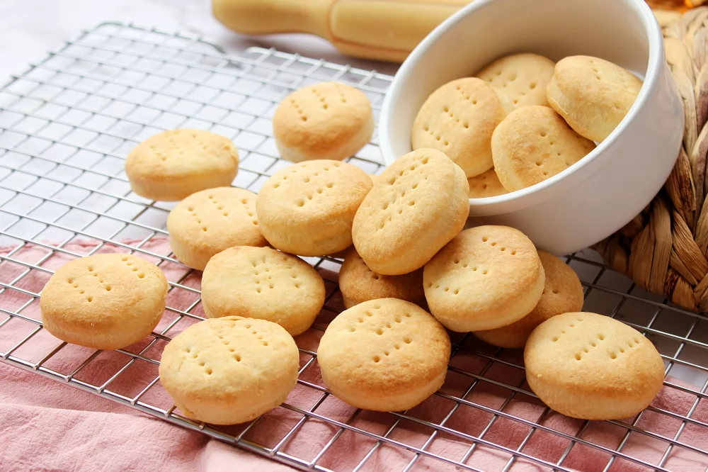

Bizcochitos de grasa

Unas galletas saladas tradicionales de la cocina argentina, que se caracterizan
por la grasa de vaca, uno de sus ingredientes principales. Su delicioso sabor
y textura ligeramente hojaldrada te encantará.
Ingredientes
| Cant |
Producto |
| 400 g |
Harina de trigo |
| 9 mg |
Levadura fresca |
| 100 ml |
Agua |
| 12 g |
Sal |
| 160 g |
Grasa o manteca |
Preparación
- Formar un volcán con la harina y en su interior, añadir
9 gramos de levadura fresca desmenuzada y 100 ml de agua.
- Mezclar los ingredientes con las manos hasta obtener una masa
de textura arenosa. En este punto, incorporar 12 gramos de sal fina.
- Añadir la grasa de vaca o mantequilla y mezclar hasta integrar todos
los ingredientes. Formar una bola, envolver en film y refrigérala
durante 20 minutos
- Sobre una lámina de silicona o papel de horno estirar la masa con
un rodillo dándole forma rectangular
- Plegar la masa llevando el lado izquierdo hacia la derecha hasta
los 2/3 del rectángulo. Realizar lo mismo con el lado derecho
- Girar la masa 90º y estírarla con el rodillo para repetir el paso anterior.
Envolver la masa con film y refrigerar durante 15 minutos
- Precalienta el horno a 180 ℃ calor arriba y abajo con ventilador.
Corta la masa con un cortador de 4 cm de diámetro y pincha cada
bizcochito con un tenedor
- Pincelar los bizcochitos con mantequilla derretida y hornéarlos a 180 ℃ durante
20 minutos o hasta que comiencen a dorarse
- Sacar los bizcochitos de grasa del horno y dejar enfriar sobre una rejilla